摘要
通过分析 ECHAM4 模式模拟和 NCEP–NCAR 再分析，揭示了北传的北半球夏季季节内振荡（BSISO）的时空结构。
The spatial and temporal structures of the northward-propagating boreal summer intraseasonal oscillation (BSISO) are revealed based on the analysis of both the ECHAM4 model simulation and the NCEP–NCAR reanalysis.
模型模拟的 BSISO 结构和演化特征与 NCEP-NCAR 再分析得出的结果有许多相似之处。
The BSISO structure and evolution characteristics simulated by the model bear many similarities to those derived from the NCEP–NCAR reanalysis.
最显著的特征是涡度和比湿场中相对于 BSISO 对流的显著的经向不对称性。
The most notable features are the remarkable meridional asymmetries, relative to the BSISO convection, in the vorticity and specific humidity fields.
具有等效正压结构的正涡度扰动出现在对流中心以北几纬度处。
A positive vorticity perturbation with an equivalent barotropic structure appears a few latitude degrees north of the convection center.
最大比湿也显示对流层低层有明显的北移。
The maximum specific humidity also shows a clear northward shift in the lower troposphere.
提出了两种内部大气动力学机制来理解BSISO向北传播的原因。
Two internal atmospheric dynamics mechanisms are proposed to understand the cause of the northward propagation of the BSISO.
第一种是垂直切变机制。
The first is the vertical shear mechanism.
与该机制相关的关键过程是在存在平均流垂直切变的情况下，由于自由大气斜压模式和正压模式之间的耦合而产生正压涡度。
The key process associated with this mechanism is the generation of barotropic vorticity due to the coupling between the free-atmosphere baroclinic and barotropic modes in the presence of the vertical shear of the mean flow.
自由大气中诱发的正压涡度进一步引起行星边界层（PBL）中的水汽汇聚，导致对流加热北移。
The induced barotropic vorticity in the free atmosphere further causes a moisture convergence in the planetary boundary layer (PBL), leading to the northward shift of the convective heating.
第二个机制是水汽-对流反馈机制。
The second mechanism is the moisture–convection feedback mechanism.
两个过程导致低层水汽北移。
Two processes contribute to the northward shift of the low-level moisture.
一是PBL中偏南风的水汽平流。
One is the moisture advection by the mean southerly in the PBL.
另一个是由于平均经向比湿梯度而导致的 BSISO 风的水汽平流。
Another is the moisture advection by the BSISO wind due to the mean meridional specific humidity gradient.
比湿不对称导致对流加热北移。
The asymmetric specific humidity contributes to the northward shift of the convective heating.
构建了一个理论框架来研究向北传播的BSISO模式的不稳定性以及包括海气相互作用在内的各种机制的相对作用。
A theoretical framework is constructed to investigate the instability of the northward-propagating BSISO mode and the relative roles of various mechanisms including air–sea interactions.
特征值分析表明BSISO北传是季风区夏季平均气流的不稳定模态。
An eigenvalue analysis indicates that the northward propagation of the BSISO is an unstable mode of the summer mean flow in the monsoon region.
典型波长为2500公里。
It has a typical wavelength of 2500 km.
虽然东风切变主要对北纬 5°以北的向北传播做出贡献，但水汽反馈和海气相互作用也有显著贡献，特别是在赤道附近和以南地区。
While the easterly shear contributes to the northward propagation primarily north of 5°N, the moisture feedback and the air–sea interaction also contribute significantly, particularly in the region near and south of the equator.
内部大气动力学对于导致 BSISO 在热带印度洋上空向北传播至关重要。
The internal atmospheric dynamics are essential in causing the northward propagation of the BSISO over the tropical Indian Ocean.
引言
季节内振荡 (ISO) 是热带大气中最重要的信号之一。
The intraseasonal oscillation (ISO) is one of the most significant signals in the tropical atmosphere.
Madden 和 Julian（1971）的开创性研究首先在坎顿岛的纬向风场中发现了周期为 40—50 天的季节内振荡信号。
The pioneering work by Madden and Julian (1971) first detected the ISO signal, with a period of 40–50 days, in the zonal wind field over Canton Island.
后来他们进一步根据压力场和风场记录了ISO的空间结构（Madden和Julian 1972），发现这种振荡是全球尺度的，主要特征是赤道向东传播，具有纬向波数1结构。
Later they further documented the spatial structure of the ISO based on pressure and wind fields (Madden and Julian 1972) and found that this oscillation is of global scale and is characterized primarily by equatorial eastward propagation with a zonal wavenumber-1 structure.
虽然强东传的季节内振荡（Madden–Julian 模态）主要见于北半球冬季，北半球夏季的季节内振荡则主要表现为印度洋区域的北传，以及西太平洋离赤道区域的西北传。
While the strong eastward propagating ISO (the Madden–Julian mode) is primarily observed in boreal winter, the ISO in boreal summer is dominated by northward propagation in the Indian sector and northwestward propagation off the equator in the western Pacific.
Yasunari（1979，1980）是最早记录南亚季风区季节内振荡相关云和对流由赤道带明显北移至约 30°N 的研究者之一。
Yasunari (1979, 1980) was among the first to document the marked northward movement of clouds and convection associated with the ISO from the equatorial zone to around 30°N over the South Asian monsoon region.
这种模态的变化与印度季风主要的活跃期和中断期循环有关。
The fluctuation of this mode is associated with major ‘‘active’’ and ‘‘break’’ cycles of the Indian monsoon.
Yasunari注意到北移是由赤道印度洋上空向东传播的云扰动引发的。
Yasunari noticed that the northward movement was initiated by eastward-propagating cloud disturbances developing over the equatorial Indian Ocean.
其他研究利用不同气象变量进一步记录了这种周期为 30—50 天的北传模态（如 Sikka and Gadgil 1980；Krishnamurti and Subrahmanyam 1982；Murakami et al. 1984；Lorenc 1984；Cadet 1986；Lau and Chan 1986；Wang and Rui 1990）。
This northward propagating mode with the 30–50-day period was further documented by other studies using various meteorological variables (e.g., Sikka and Gadgil 1980; Krishnamurti and Subrahmanyam 1982; Murakami et al. 1984; Lorenc 1984; Cadet 1986; Lau and Chan 1986; Wang and Rui 1990).
Sikka 和 Gadgil (1980) 指出，北半球夏季，印度经度 (70°–90°E) 上空有两个最大云区 (MCZ)，一个位于北纬 15°，另一个位于赤道附近。
Sikka and Gadgil (1980) pointed out that during boreal summer there are two maximum cloud zones (MCZ) over the Indian longitudes (70°–90°E), one being along 15°N and the other near the equator.
两个对流区表现出跷跷板特征，即赤道MCZ存在而另一个不存在，反之亦然。
The two convection zones exhibit a seesaw characteristic, that is, the equatorial MCZ is present while the other one is absent, or vice versa.
最有趣的是，季风MCZ的活跃/中断周期与赤道MCZ的北移密切相关。
Most interestingly, the active/break cycle of the monsoon MCZ is closely connected to the northward propagation of the equatorial MCZ.
Krishnamurti 和 Subrahmanyam（1982）指出，在印度次大陆区域，赤道附近生成的一系列槽脊稳定地向北传播，并在喜马拉雅山南麓附近消散。
Krishnamurti and Subrahmanyam (1982) noted a steady meridional propagation of a train of troughs and ridges that form near the equator and dissipate near the foot of Himalayas over the Indian subcontinent sector.
该模态的经向长度尺度约为3000公里，经向相速约为每天0.75°纬度。
The meridional length scale of this mode is about 3000 km, and its meridional phase speed is about 0.75° latitude per day.
Wang 和 Rui（1990）分析了 1975—1985 年的 10 年候平均 OLR 数据，将季节内振荡事件分为东传（65%）、独立北传（20%）和西传（15%）三类。
By analyzing 10-yr (1975–85) pentad mean OLR data, Wang and Rui (1990) classified the ISO events into three categories: eastward propagation (65%), independent northward propagation (20%), and westward propagation (15%).
受限于赤道附近的东传模态在北半球冬季比夏季更活跃。
The eastward-propagation mode, which is trapped near the equator, is more active in boreal winter than in summer.
与东传无关的独立北传发生在北半球夏季 5—10 月的印度和西太平洋季风区。
The independent northward propagation, which is not associated with the eastward propagation, is found over Indian and western Pacific monsoon regions in boreal summer from May to October.
对于向东传播模式，确定了一种特殊场景，其中向北传播与沿赤道向东传播相关。
For the eastward propagating mode, a special scenario is identified in which the northward propagation is associated with the eastward propagation along the equator.
北半球夏季印度洋和西太平洋地区的全部北传个例中，约半数为独立北传，其余约半数似乎与赤道沿线东传的对流相联系。
Among the total northward-propagating cases over the Indian and western Pacific regions during the boreal summer, about half of them are independent northward propagation cases, and the other half seem to be connected with eastward propagating convection along the equator.
上述观测研究表明，北移是亚洲季风区北半球夏季ISO（BSISO）最显著的特征之一。
The aforementioned observational studies indicate that the northward propagation is one of the most striking features of the boreal summer ISO (BSISO) in the Asian monsoon region.
一个悬而未决的问题是，是什么原因导致季风区BSISO对流向北传播。
An open question is what causes the northward propagation of the BSISO convection in the monsoon region.
Webster (1983) 假设进入大气行星边界层 (PBL) 的陆地表面热通量可能在对流之前破坏大气稳定，导致对流区向北移动。
Webster (1983) hypothesized that the land surface heat flux into the atmospheric planetary boundary layer (PBL) may play a role in destabilizing the atmosphere ahead of the convection, leading to a northward shift of the convective zone.
然而，观测表明最强的向北传播信号出现在印度洋北部（沿孟加拉湾经度），而不是陆地上空。
However, observations show that the strongest northward propagation signal appears over the northern Indian Ocean (along Bay of Bengal longitudes), not over the land.
Goswami 和 Shukla（1984）提出，对流—热力松弛反馈可能是赤道与季风最大云区之间产生驻波式振荡的关键。
Goswami and Shukla (1984) proposed that the convection–thermal relaxation feedback might be a key for generating a standing oscillation between the equatorial and monsoon MCZs.
在他们的假设中，对流活动会导致静态稳定性的增加，从而抑制对流本身；同时，动力和辐射弛豫降低了湿静态稳定性，并使大气进入新的对流不稳定状态。
In their hypothesis, convective activity results in an increase of static stability, which depresses convection itself; meanwhile, dynamical and radiative relaxation decreases moist static stability and brings the atmosphere to a new convectively unstable state.
然而，他们没有解决与 ISO 向北传播相关的机制。
However, they did not address the mechanism associated with the northward propagation of the ISO.
基于中间大气模型的模拟，Wang和Xie（1997）提出了罗斯贝波发射假设如下。
Based on simulations from an intermediate atmospheric model, Wang and Xie (1997) proposed a Rossby wave emanation hypothesis as follows.
当对流东移至赤道中太平洋时，平均海温和比湿降低，使赤道对流辐射出罗斯贝波，并形成一道“对流锋”。
When the convection moves eastward to the central equatorial Pacific, the reduction of the mean SST and specific humidity leads to the emanation of Rossby waves from the equatorial convection, which forms a “convection front.”
这道对流锋从赤道到 20°N 向西北倾斜，呈 V 形；随着整个波包东移，表现出表观的北移。
This convection front tilts northwestward from the equator to 20°N (a V shape), resulting in an apparent northward movement as the entire wave packet migrates eastward.
Lawrence 和 Webster（2002）的波数—频率分析图显示，相当一部分北传与东传分量相联系，从而支持了这一罗斯贝波辐射假说。
This Rossby wave emanation hypothesis was supported by Lawrence and Webster (2002), who showed that a large portion of the northward propagation is connected to the eastward moving component in their wave-number–frequency analysis maps.
然而，罗斯贝波发射假说并不能解释独立的向北传播的ISO。
However, this Rossby wave emanation hypothesis does not explain the independent northward propagating ISOs.
大气和海洋之间的相互作用是导致向北传播的另一个可能机制。
The interaction between the atmosphere and ocean is another possible mechanism contributing to the northward propagation.
这是因为表面潜热通量的减少（由于总风速的降低）可能会增加对流以北的海面温度（SST），导致 PBL 中的水汽汇聚（Kemball-Cook 和 Wang 2001）。
This is because reduced surface latent heat fluxes (due to a decrease in the total wind speed) may increase sea surface temperature (SST) to the north of the convection, leading to a moisture convergence in the PBL (Kemball-Cook and Wang 2001).
因此对流以北的大气不稳定，对流向北移动。
Thus the atmosphere north of the convection is destabilized, and the convection moves northward.
虽然观测数据证实了海表温度与对流相位关系，但尚不清楚海气相互作用是否在向北传播中发挥主动作用，或者海表温度只是对大气强迫的被动响应。
While observational data confirm the SST–convection phase relationship, it is not clear whether the air–sea interaction plays an active role in the northward propagation or the SST is simply a passive response to the atmospheric forcing.
这项研究的目标是揭示导致 BSISO 向北传播的基本大气动力学过程。
The goal of this study is to reveal essential atmospheric dynamical processes that give rise to the northward propagation of the BSISO.
具体要解决的科学问题如下。
The specific scientific questions to be addressed are as follows.
北传ISO模式下各气象变量之间的经向相位关系如何？
What is the meridional phase relationship among various meteorological variables for the northward propagating ISO mode?
这种经向相位关系由什么造成？
What causes the meridional phase relationship?
为什么南亚和西太平洋季风区有利于向北传播？
Why is the northward propagation favorable over the South Asian and western Pacific monsoon regions?
内部大气动力学和海气相互作用对于北移传播的相对作用是什么？
What is the relative role of the internal atmospheric dynamics and air–sea interaction in contributing to the northward propagation?
为了实现这一目标，我们依靠大气环流模型（AGCM）模拟（其中我们通过指定气候月平均海表温度排除海气相互作用的影响）和观测的分析。
To achieve this goal, we rely on the analysis from both atmospheric general circulation model (AGCM) simulations (in which we exclude the effect of air–sea interactions by specifying climatological monthly mean SST) and observations.
在第 2 节中，给出了模型和观测数据的简要描述。
In section 2, a brief description of the model and the observational data is given.
在第3节中，北移ISO模态的时空结构是基于AGCM模拟和观测构建的。
In section 3, the temporal and spatial structures of the northward moving ISO mode are constructed based on both the AGCM simulations and the observations.
对 BSISO 结构的分析导致发现了两种新机制，这将在第 4 节中讨论。
The analysis of the BSISO structures leads to the discovery of two new mechanisms, which are discussed in section 4.
在第5节中，我们进一步提出了一个简单的理论框架，以探索向北传播的BSISO模式的不稳定性本质，并了解包括海气相互作用在内的各种机制在促进向北传播中的相对作用。
In section 5, we further advance a simple theoretical framework to explore the instability nature of the northward propagating BSISO mode and to understand the relative role of various mechanisms including the air–sea interaction in contributing to the northward propagation.
最后，最后一节给出了总结。
Finally, a summary is given in the last section.
模式与数据
本研究中使用的模型是 ECHAM AGCM 4.0 版（Roeckner 等人，1996），分辨率为 T30 和 19 个垂直级别。
The model used in this study is the ECHAM AGCM version 4.0 (Roeckner et al. 1996) at a resolution of T30 and 19 vertical levels.
本 AGCM 中使用的对流方案是由 Nordeng (1994) 修改的穿透、浅层和中层对流的质量通量方案 (Tiedtke 1989)，以便将云底质量通量与穿透对流的对流不稳定性联系起来。
The convection scheme used in this AGCM is the mass flux scheme for penetrative, shallow, and midlevel convection (Tiedtke 1989) modified by Nordeng (1994) so that the cloud-base mass flux is linked to convective instability for the penetrative convection.
该模型积分15年，下边界条件由气候月平均SST给出。
This model is integrated for 15 years, with the lower boundary condition given by the climatological monthly mean SST.
输出日平均场用于分析。
Daily averaged fields are written out for analysis.
为了检查模型模拟的可靠性，我们分析了国家环境预测中心-国家大气研究中心（NCEP-NCAR）再分析数据集进行比较。
To check the reliability of the model simulation, we analyze the National Centers for Environmental Prediction–National Center for Atmospheric Research (NCEP–NCAR) reanalysis dataset for comparison.
同样，采用1980年至2001年期间的日平均数据，再分析数据的水平分辨率为2.5°纬度×2.5°经度，垂直方向有12个压力级别。
Again, daily averaged data are used for a period from 1980 to 2001, and the horizontal resolution of the reanalysis data is 2.5° latitude × 2.5° longitude and vertically there are 12 pressure levels.
三维变量包括纬向风、经向风、气压坐标垂直速度以及比湿。
The 3D variables include the zonal and meridional wind components, vertical p velocity, and specific humidity.
采用美国国家海洋和大气管理局的日平均向外长波辐射（OLR）数据作为对流的代理指标。
The daily averaged outgoing longwave radiation (OLR) data from the National Oceanic and Atmospheric Administration is employed as the proxy for convection.
为了将模型降水与观测数据进行比较，使用了气候预测中心 (CPC) 降水数据合并分析 (CMAP；Xie 和 Arkin 1997)。
To compare the model precipitation with the observed, the Climate Prediction Center (CPC) Merged Analysis of Precipitation data (CMAP; Xie and Arkin 1997) are used.
为分离季节内振荡信号，采用带通滤波。
To isolate the ISO signal, a bandpass filtering method is applied.
对于日数据，每年提取4到24之间的谐波，对应15-90天的周期。
For daily data, harmonics between 4 and 24 are extracted each year, which corresponds to the period of 15–90 days.
对模式输出和 NCEP–NCAR 再分析中的每个气象场均应用这种时间滤波。
This time filtering is applied to each meteorological field for both the model output and the NCEP–NCAR reanalysis.
BSISO 的结构
在揭示 ISO 结构之前，我们首先检查北半球夏季平均季风模拟中的模型性能。
Before revealing the ISO structure, we first examine the model performance in the mean monsoon simulation in boreal summer.
图1为观测和模拟的气候夏季平均降水量和风场。
Figure 1 shows the observed and simulated climatological summer mean precipitation and wind fields.
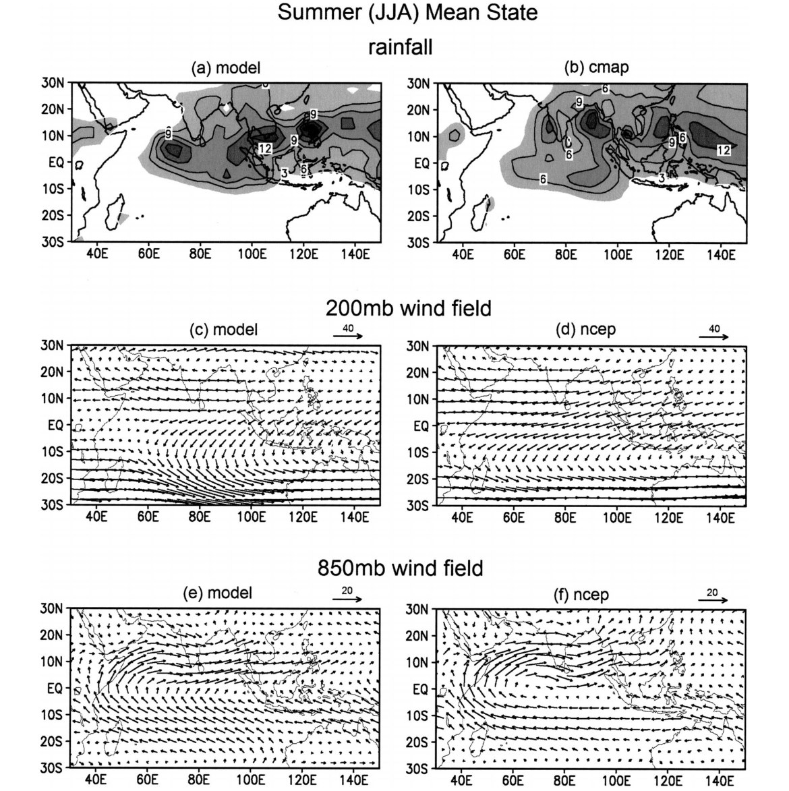
ECHAM 模拟与观测的夏季（6—8 月）平均态：（a、b）降水（mm day⁻¹）；（c、d）200 hPa 风；（e、f）850 hPa 风（m s⁻¹）。
The ECHAM simulated and observed summer mean (JJA) (a), (b) precipitation (mm day⁻¹); (c), (d) 200-mb wind; and (e), (f) 850-mb wind fields (m s⁻¹).
模式捕捉到了夏季降水的总体分布，包括菲律宾和南海附近以及赤道印度洋的降水中心。
The model captures the gross pattern of the summer rainfall such as the rainfall centers around Philippine and the South China Sea and over the equatorial Indian Ocean.
然而，该模型低估了孟加拉湾的降雨量，但高估了赤道印度洋的降雨量。
The model, however, underestimates the rainfall amount over the Bay of Bengal but overestimates it over the equatorial Indian Ocean.
南亚季风区北半球夏季最显著的环流特征是亚洲大陆上空的巨大反气旋环流和对流层上层盛行东风，以及对流层下层跨赤道索马里急流和西风带。
The most notable circulation features in boreal summer over the south Asian monsoon region are the gigantic anticyclonic circulation over the Asian continent and prevailing easterlies in the upper troposphere and the cross-equatorial Somali jet and westerlies in the lower troposphere.
ECHAM AGCM 很好地再现了这些特征。
These features are well reproduced by the ECHAM AGCM.
正如稍后将讨论的，这种明显的平均流垂直切变对于 BSISO 模式的放大和向北传播起着重要作用。
As will be discussed later, this pronounced vertical shear of the mean flow plays an important role for the amplification and northward propagation of the BSISO mode.
BSISO 模式的经向相位传播可以通过 15 年积分期间沿 70°–95°E 的降雨量的 Hovmöller 图很容易地识别（图 2）。
The meridional phase propagation of the BSISO mode may be readily identified by a Hovmöller diagram of the rainfall along 70°–95°E during a 15-yr integration period (Fig. 2).
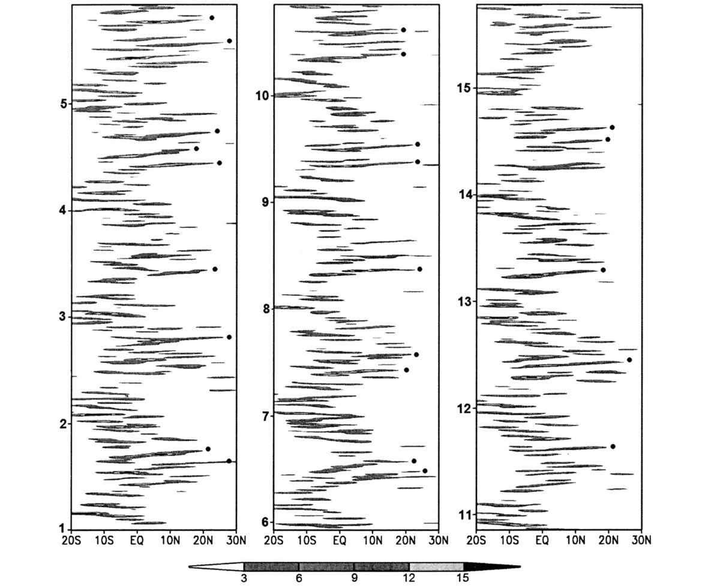
沿 70°—95°E 的模式季节内振荡降水 Hovmöller 图（mm day⁻¹）；仅绘出正降水异常。
Hovmöller diagram of the model ISO rainfall (mm day⁻¹) along 70°–95°E (only positive rainfall anomalies plotted).
纵轴为模式第 1—15 年。
The vertical axis is time from model year 1 to 15.
实心点标出用于合成分析的 23 个强北传个例。
The solid dots denote the 23 strong northward propagation cases selected for composite analyses.
请注意，向北传播在每年的北半球夏季最为明显。
Note that the northward propagation is most pronounced during the boreal summer each year.
传播也表现出很强的年际变化。
The propagation also exhibits strong interannual variability.
某些年份出现较多或较强的向北传播事件，而另一些年份出现较少或较弱的向北传播事件。
More or stronger northward propagation events appear in some years while less or weaker events appear in other years.
由于模式指定了气候态月平均海温，这种年际变化源自大气内部动力过程。
Interannual variability results from internal atmospheric dynamics as the climatological monthly mean SST are specified.
北半球冬季，降水趋于向南传播。
During the boreal winter, the rainfall tends to move southward.
向北和向南传播都是从赤道地区开始的。
Both the northward and southward propagations start from the equatorial region.
为揭示 BSISO 的经向和垂直结构，我们选取 23 个强北传个例进行合成分析。
To reveal the meridional and vertical structure of the BSISO, we take a composite approach by selecting 23 strong northward propagation cases.
构建合成时规定，第 0 天季节内振荡对流沿 70°—95°E 恰好到达 5°N。
The composite is constructed as such that at day 0 the ISO convection arrives exactly at 5°N along 70°–95°E.
图 3 展示了从第 −16 天至第 12 天、每隔 2 天的合成降水演变。
The time sequence of the composite rainfall from day −16 to day 12 (with a 2-day interval) is illustrated in Fig. 3.
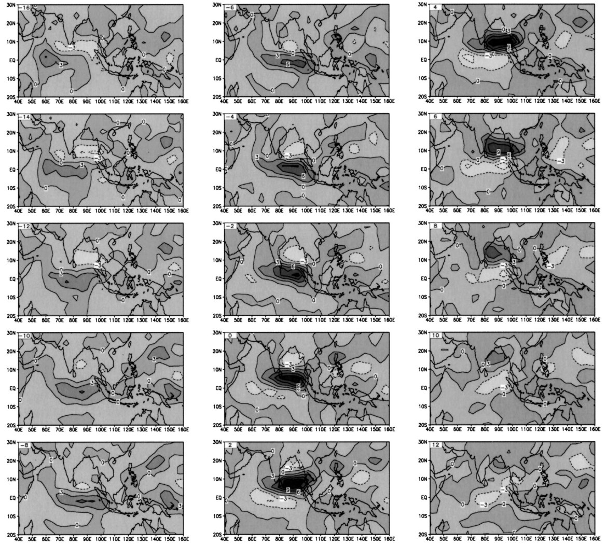
模式季节内振荡降水合成从第 −16 天到第 12 天的演变（mm day⁻¹）。
Evolution of the model ISO rainfall composite (mm day⁻¹) from day −16 to day 12.
深色阴影表示正降水扰动对应的活跃对流，浅色阴影表示负降水扰动对应的受抑对流。
Dark shading indicates the convection with positive rainfall perturbation and light shading indicates the suppressed convection with negative rainfall perturbation.
第 0 天为对流中心沿 70°—95°E 到达 5°N 的时刻。
Day 0 represents a reference time when the convection center moves to 5°N along 70°–95°E.
第 −16 天，一个较弱的季节内振荡对流中心位于赤道西印度洋约 60°E。
At day −16, an ISO convection center is located in the equatorial western Indian Ocean (about 60°E), and the intensity of the convection is weak.
随后几天，对流增强并沿赤道向东移动。
In the ensuing days, the convection intensifies and moves eastward along the equator.
第 −8 天，最大降水中心到达赤道东印度洋约 90°E。
At day −8, the maximum rainfall center arrives in the eastern equatorial Indian Ocean around 90°E.
此后，对流开始向北移动，同时加强。
After that, the convection starts to move northward, and at the same time it intensifies.
第 4 天，对流到达 10°N 并达到最大强度。
At day 4, the convection arrives at 10°N and reaches maximum intensity.
此后，对流继续北移，但开始减弱。
Later it begins to weaken while continuing to move northward.
第10天，对流中心到达孟加拉湾北部。
At day 10, the convection center arrives in the northern Bay of Bengal.
尤其值得注意的是，第 −2 天东印度洋的对流移至 3°N 时，赤道西印度洋出现了负降水异常中心。
Of particular interest is the generation of a negative rainfall center over the western equatorial Indian Ocean at day −2 when the convection in the eastern Indian Ocean moves to 3°N.
随后，这股负对流异常放大并向东移动至赤道东印度洋，然后沿前期对流行为向北移动。
Later, this negative convection anomaly amplifies and moves eastward to the eastern equatorial Indian Ocean and then moves northward, following the behavior of the previous convection.
这提示了一种 BSISO 形成的可能情景：作为夏季平均气流的不稳定模态，BSISO 在季风区内部自我调节。
This poses a possible scenario for the origin of the BSISO, that is, the BSISO, as an unstable mode of the summer mean flow, is self-regulated within the monsoon region.
我们将在第 5 节进一步讨论这个问题。
We will discuss this issue further in section 5.
对流在赤道西印度洋生成并东移至约 90°E 的赤道东印度洋后，在该经度以东不再有清晰的对流东传信号。
After the convection is initiated over the western equatorial Indian Ocean and moves eastward to the eastern equatorial Indian Ocean around 90°E, there is no clear eastward moving convection signal beyond east of this longitude.
这说明上述合成主要反映独立北传的季节内振荡模态。
This implies that the composite above mainly captures the independent northward propagating ISO mode.
BSISO的经向相速可以根据图4所示的合成降雨量的时纬剖面（以最大降雨量轴为基准）估算。
The meridional phase speed of the BSISO may be estimated from the time–latitude section of the composite rainfall (base on the axis of the maximum rainfall) shown in Fig. 4.
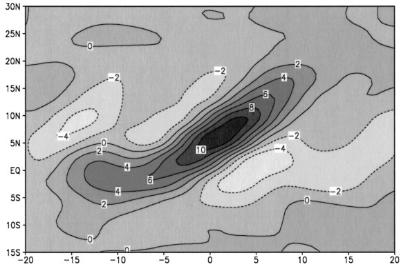
ECHAM 模式沿 75°—90°E 的合成降水 Hovmöller 图（mm day⁻¹）。
Hovmöller diagram of the composite rainfall (mm day⁻¹) along 75°–90°E from the ECHAM model.
横轴为时间（日）。
Horizontal axis is time (day).
从赤道至 20°N 的平均传播速度约为每天 1.0 个纬度，与观测一致。
The average propagation speed from 0° to 20°N is about 1.0° day⁻¹, consistent with the observations.
最大降水中心在赤道附近移动极慢，说明赤道附近与远离赤道的北传可能有不同的动力来源。
Note that the maximum rainfall center moves extremely slowly in the equatorial region, suggesting the different dynamic origin of the northward propagation near and off the equator.
接下来，我们对日常 NCEP-NCAR 再分析数据应用相同的分析方法。
Next, we apply the same analysis approach to the daily NCEP–NCAR reanalysis data.
这里用负OLR来表示对流。
Here the negative OLR is used to represent the convection.
选取了 25 个强北传个例。
Twenty-five strong northward propagation cases are selected.
图 5 展示了经季节内时间尺度滤波的对流（负 OLR 场）合成演变。
Figure 5 shows the composite evolution of the convection (negative OLR field), filtered with the intraseasonal period.
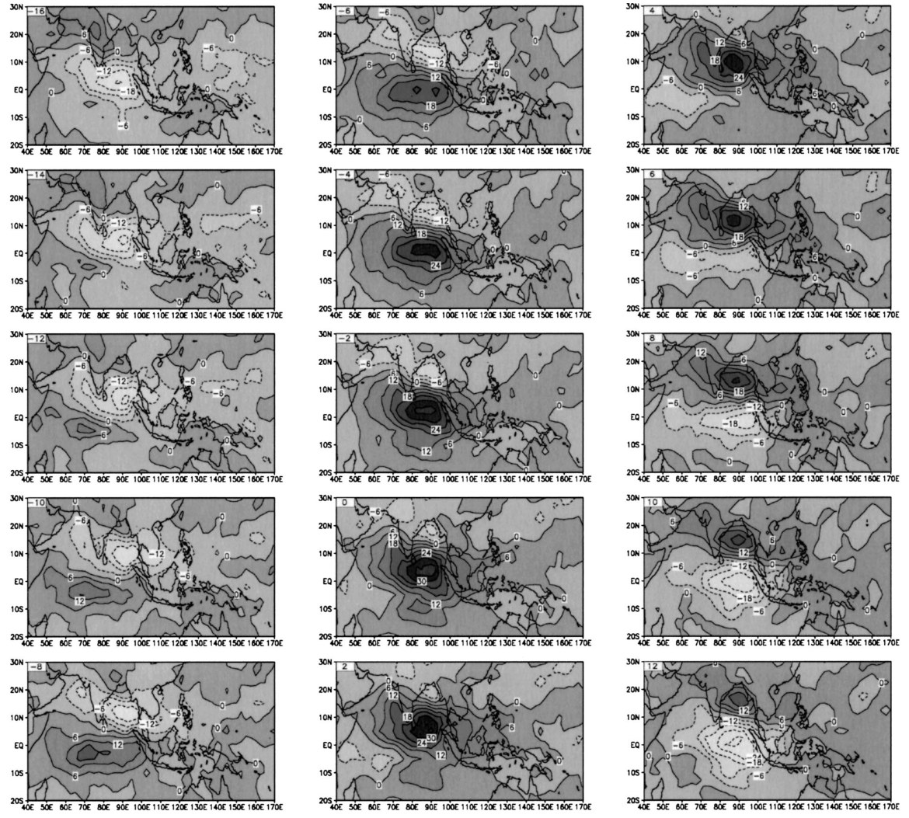
同图 3，但显示 NCEP–NCAR 再分析中的负 OLR 演变（W m⁻²）。
As in Fig. 3 except for the negative OLR (W m⁻²) evolution from the NCEP–NCAR reanalysis.
深色阴影表示负 OLR 扰动对应的活跃对流。
Dark shading indicates the convection with negative OLR perturbation.
浅色阴影表示正 OLR 扰动对应的受抑对流。
Light shading indicates the suppressed convection with positive OLR perturbation.
从模型导出的以下 BSISO 特征已被观测数据证实。
The following BSISO features derived from the model are confirmed by the observational data.
1) 西赤道印度洋上空发起新的对流，然后沿赤道向东赤道印度洋移动。
1) A new convection is initiated over the western equatorial Indian Ocean and then moves to the eastern equatorial Indian Ocean along the equator.
2）对流移动到东经90°左右的东赤道印度洋后，开始向北移动，向孟加拉湾北部移动。
2) After moving to the eastern equatorial Indian Ocean around 90°E, the convection begins to move northward toward the northern Bay of Bengal.
3) 没有明确的证据表明印度洋上空ISO对流向北传播与赤道西太平洋向东传播之间存在联系。
3) No clear evidence shows the connection between the northward propagation of the ISO convection over the Indian Ocean and the eastward propagation in the western equatorial Pacific Ocean.
观测到的OLR 和模型降水合成之间存在重要差异。
There is an important difference between the observed OLR and model precipitation composites.
观测 OLR 的北移带呈西北—东南倾斜，暗示罗斯贝波辐射；而模式中的雨带大致沿纬向排列。
The observed OLR shows a northwest–southeast tilted band structure as it moves northward, which suggests the emanation of Rossby waves, whereas in the model rain-bands are more or less zonal.
模式中的负降水扰动移动也较不连贯。
The model simulation also shows less coherent movement of negative rainfall perturbations.
沿75°~90°E的经向相速可以根据观测到的OLR场的纬度-时间剖面计算出来（图6）。
The meridional phase speed along 75°–90°E may be calculated based on the latitude–time profile of the observed OLR field (Fig. 6).
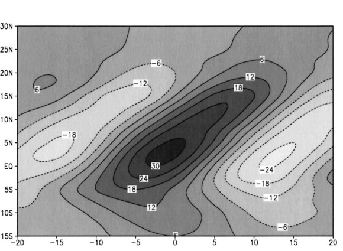
同图 4，但显示 NCEP–NCAR 再分析的合成负 OLR（W m⁻²）。
As in Fig. 4 except for the composite negative OLR (W m⁻²) from the NCEP–NCAR reanalysis.
结果显示，平均北传速度约为每天 0.93 个纬度，与大气环流模式的结果相近。
The result shows that an average northward propagation speed is 0.93° latitude per day, similar to that obtained from the AGCM.
传播速度在 5°S 和赤道之间较慢，从赤道到 25°N 几乎恒定。
The propagation speed is slower between 5°S and the equator and nearly constant from the equator to 25°N.
与模型合成不同，观测到的OLR合成在5°S和15°S之间表现出向南传播，振幅要弱得多。
Different from the model composite, the observed OLR composite exhibits a southward propagation with much weaker amplitude between 5°S and 15°S.
接着我们考察北传 BSISO 模态各气象场之间的经向相位关系，以揭示北传的基本动力过程。
Next we examine the meridional phase relationship among various meteorological fields associated with the northward propagating BSISO mode in an attempt to unveil fundamental dynamics behind the northward propagation.
特别关注动力场和热力场相对于对流中心的经向不对称性。
Special attention is paid to the meridional asymmetry of dynamic and thermodynamic fields with respect to the convection center.
BSISO 模态结构是依据最显著的北传个例合成得到的。
The BSISO mode structure is composed based on the most significant northward propagation cases.
我们先在对流最强时对应的各参考纬度构建相位结构。
We first construct the phase structure at each reference latitude over which the maximum convection occurs.
由于这些相位结构很相似，我们再以不同纬度的最强对流中心为基准进行合成。
As these phase structures bear great similarity, we further compose them with respect to the maximum convection center for different latitudes.
图 7 显示了模型中复合 BSISO 模式的经向-垂直结构。
Figure 7 shows the meridional–vertical structure of the composite BSISO mode in the model.
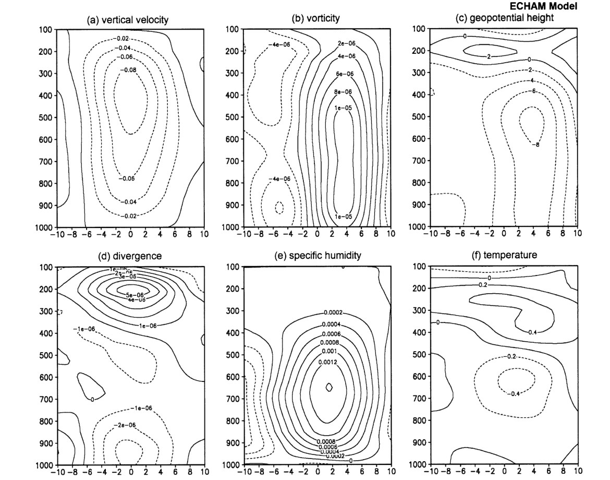
ECHAM 模式中北传 BSISO 模态的经向—垂直结构：（a）垂直速度（hPa s⁻¹）；（b）涡度（s⁻¹）；（c）位势高度（dam）；（d）散度（s⁻¹）；（e）比湿（kg kg⁻¹）；（f）温度（K）。
Meridional–vertical structures of the northward propagating BSISO mode derived from the ECHAM model: (a) vertical velocity (hPa s⁻¹), (b) vorticity (s⁻¹), (c) geopotential height (dam), (d) divergence (s⁻¹), (e) specific humidity (kg kg⁻¹), and (f) temperature (K).
横轴为相对于对流中心的经向距离（纬度）。
Horizontal axis is the meridional distance (°lat) with respect to the convection center.
正（负）值表示对流中心以北（以南）。
The positive (negative) value means to the north (south) of convection center.
为了清楚地说明经向相位关系，我们对经向方向的每个场应用了三次样条插值。
To clearly illustrate the meridional phase relationship, we have applied a cubic-spline interpolation for each field in the meridional direction.
从图 7 可以看出，最大垂直运动发生在对流层中部（约 400 mb），与对流中心重合。
From Fig. 7, one can see that maximum vertical motion occurs in the middle troposphere (about 400 mb) and coincides with the convection center.
与最大上升运动相关的是低层辐合和对流层上层辐散。
Associated with this maximum ascending motion are the low-level convergence and the upper-tropospheric divergence.
相对于对流中心最引人注目的不对称结构出现在涡度场中。
The most striking asymmetric structure with respect to the convection center appears in the vorticity field.
具有等效正压结构的正涡度中心位于对流中心以北400公里处，而对流中心以南则出现具有相同正压结构的负涡度。
A positive vorticity center with an equivalent barotropic structure is located 400 km north of the convection center, while a negative vorticity with the same equivalent barotropic structure appears to the south of the convection center.
另一个引人注目的不对称性出现在比湿场中。
Another striking asymmetry appears in the specific humidity field.
在对流层低层，最大比湿中心位于对流中心以北约 150 千米。
A maximum specific humidity center shifts about 150 km to the north of the convection center in the lower troposphere.
温度场和位势高度场相对于对流也表现出显著的相位差。
The temperature and geopotential height fields also show a significant phase difference relative to the convection.
图 8 说明了观察到的 BSISO 结构的对应部分。
Figure 8 illustrates the observed counterparts of the BSISO structure.
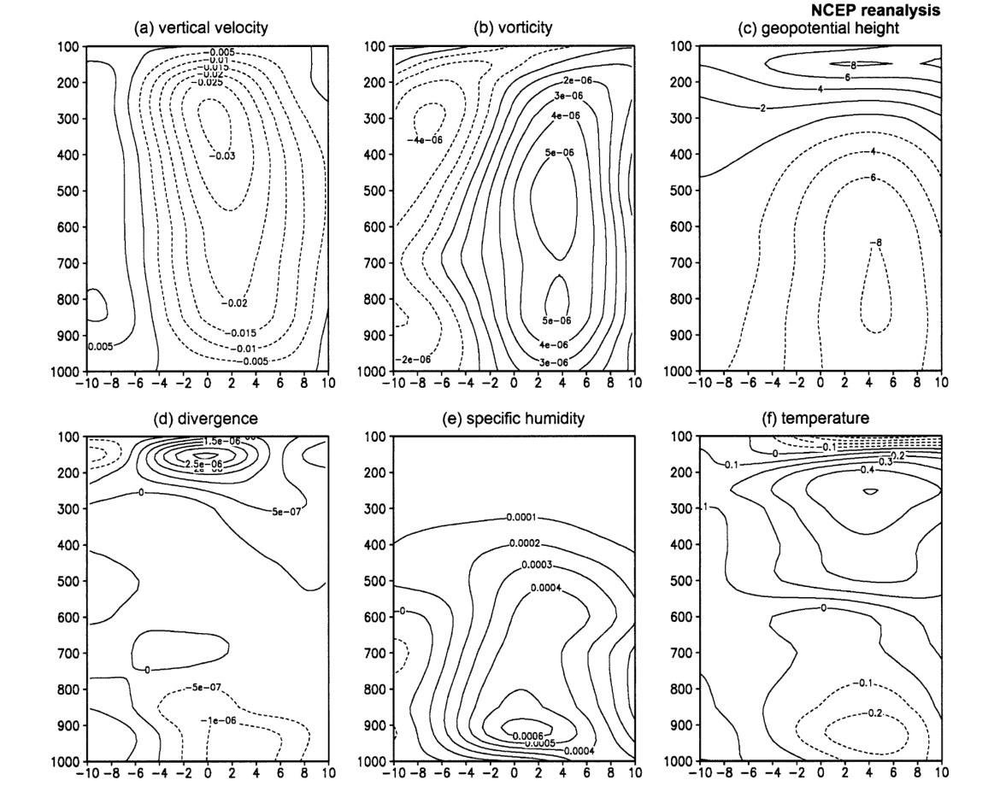
同图 7，但数据来自 NCEP–NCAR 再分析。
As in Fig. 7 except for the NCEP–NCAR reanalysis.
比较发现，模式模拟的大多数特征，例如等效正压涡度和低层比湿的北移，在 NCEP–NCAR 再分析中也得到较好的反映。
By comparison, one can find that most of the features simulated by the model, for instance, the northward shift of the equivalent barotropic vorticity and the low-level specific humidity, are well reflected by the NCEP–NCAR reanalysis.
模式与观测的 BSISO 结构及传播特征相似，表明在一阶近似下，内部大气动力过程是造成北传的关键。
The resemblance of the model and observed BSISO structure and propagation characteristics suggests that to the first order of approximation, it is the internal atmospheric dynamics that are essential to cause the northward propagation.
这是进行观察分析和 AGCM 分析的动机之一。
This is one of the motivations to conduct both observational and AGCM analyses.
与模型相比，一个显著特征在于低层散度和垂直速度场。
A distinctive feature, compared to the model, lies in the low-level divergence and vertical velocity fields.
在 NCEP–NCAR 再分析中，边界层辐合的相位通常超前对流约 3 个纬度。
In the NCEP–NCAR reanalysis data, the PBL convergence tends to lead the convection by 3°.
这伴随着最大垂直速度轴的倾斜。
This is accompanied by the tilting of the maximum vertical velocity axis.
中高层垂直运动与对流同步，但低层垂直运动向北移动。
While the vertical motion at the middle–upper levels is in phase with the convection, it shifts to the north at the lower levels.
PBL 辐合的这种向北移动很可能是由对流之前 PBL 顶部正涡度引起的埃克曼泵浦引起的。
It is likely that this northward shift of the PBL convergence results from the Ekman pumping induced by the positive vorticity at the top of the PBL ahead of the convection.
然而，该模型未能捕捉到这一特征，可能是由于对流层下部的湍流混合太强。
The model, however, fails to capture this feature, possibly due to too strong turbulent mixing in the lower troposphere.
这部分反映在最大比湿中心的高度上。
This is partly reflected by the height of the maximum specific humidity center.
虽然观测到的最大比湿中心（图 8e）被限制在 850 mb 以下的边界层中，但模型比湿峰值在更高的高度（约 650 mb）。
While the observed maximum specific humidity center (Fig. 8e) is confined in the boundary layer below 850 mb, the model specific humidity peaks in a much higher attitude (around 650 mb).
北传机制
在本节中，基于上一节所示的经向和垂直结构，我们打算揭示导致BSISO向北传播的内部大气动力学。
In this section, based on meridional and vertical structures illustrated in the previous section, we intend to unveil the internal atmospheric dynamics responsible for the northward propagation of the BSISO.
垂直切变机制
这种机制是由观测和模型 BSISO 结构激发的，即对流中心以北出现等效正压涡度场。
This mechanism is motivated by the observed and model BSISO structure that an equivalent barotropic vorticity field appears to the north of the convection center.
下面，我们通过2.5层中间大气模型，演示了夏季平均气流的垂直切变如何导致正压和斜压模态的耦合以及经向不对称正压涡度场的发展。
In the following, by using a 2.5-layer intermediate atmospheric model, we demonstrate how the vertical shear of the summer mean flow leads to the coupling of barotropic and baroclinic modes and the development of a meridionally asymmetric barotropic vorticity field.
图 9 展示了 Wang 和 Li (1993, 1994) 的 2.5 层模型的垂直结构。
Figure 9 illustrates the vertical structure of the 2.5-layer model, following Wang and Li (1993, 1994).
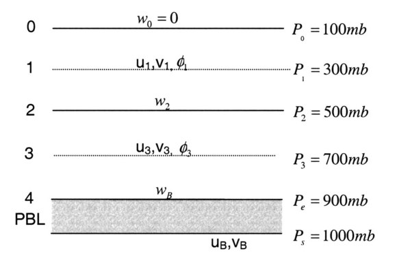
2½ 层模式的垂直结构（Wang and Li 1993）。
Vertical structure of the 2½-layer model (Wang and Li 1993).
该模式由两层自由大气和一个充分混合的行星边界层组成。
In this model, there are a 2-layer free atmosphere and a well-mixed PBL.
为简化问题，我们考虑所有变量的纬向梯度均为零的二维情形。
For simplicity we consider a 2D case with vanished zonal gradients for all variables.
在平均纬向气流的垂直切变恒定时，f 平面上线性运动的控制方程如下。
The governing equations for linear motion on an f plane under constant vertical shear of the mean zonal flow can be written as follows.
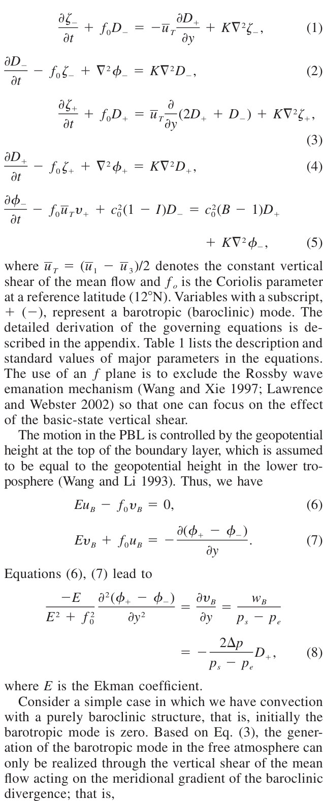
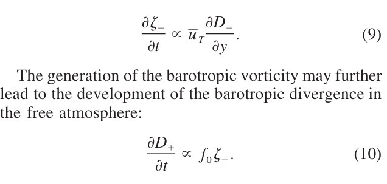
其中 ūT = (ū₁ − ū₃)/2 表示平均气流的恒定垂直切变，f₀ 是参考纬度 12°N 处的科里奥利参数。
Here ūT = (ū₁ − ū₃)/2 denotes the constant vertical shear of the mean flow, and f₀ is the Coriolis parameter at the reference latitude of 12°N.
带下标 1 (2) 的变量表示正压（斜压）模式。
Variables with a subscript, 1 (2), represent a barotropic (baroclinic) mode.
控制方程的详细推导详见附录。
The detailed derivation of the governing equations is described in the appendix.
表1列出了方程中主要参数的说明和标准值。
Table 1 lists the description and standard values of major parameters in the equations.
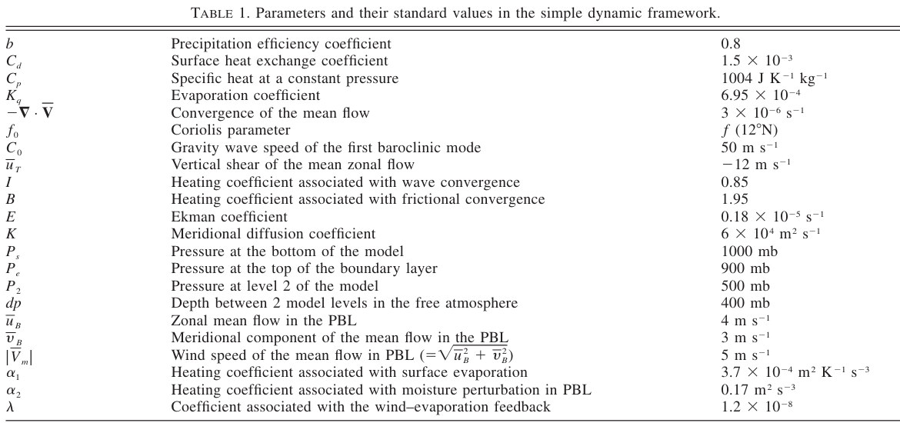
简单动力框架中的参数及其标准值。
Parameters and their standard values in the simple dynamic framework.
b — 降水效率系数 — 0.8
b — precipitation efficiency coefficient — 0.8
Cd — 地表热交换系数 — 1.5 × 10⁻³
Cd — surface heat exchange coefficient — 1.5 × 10⁻³
Cp — 定压比热 — 1004 J K⁻¹ kg⁻¹
Cp — specific heat at constant pressure — 1004 J K⁻¹ kg⁻¹
Kq — 蒸发系数 — 6.95 × 10⁻⁴
Kq — evaporation coefficient — 6.95 × 10⁻⁴
−∇·V̄ — 平均气流的辐合 — 3 × 10⁻⁶ s⁻¹
−∇·V̄ — convergence of the mean flow — 3 × 10⁻⁶ s⁻¹
f₀ — 科里奥利参数 — f(12°N)
f₀ — Coriolis parameter — f(12°N)
C₀ — 第一斜压模态的重力波波速 — 50 m s⁻¹
C₀ — gravity-wave speed of the first baroclinic mode — 50 m s⁻¹
ūT — 平均纬向气流的垂直切变 — −12 m s⁻¹
ūT — vertical shear of mean zonal flow — −12 m s⁻¹
I — 与波动辐合相关的加热系数 — 0.85
I — heating coefficient associated with wave convergence — 0.85
B — 与摩擦辐合相关的加热系数 — 1.95
B — heating coefficient associated with frictional convergence — 1.95
E — 埃克曼系数 — 0.18 × 10⁻⁵ s⁻¹
E — Ekman coefficient — 0.18 × 10⁻⁵ s⁻¹
K — 经向扩散系数 — 6 × 10⁴ m² s⁻¹
K — meridional diffusion coefficient — 6 × 10⁴ m² s⁻¹
Ps — 模式底部气压 — 1000 hPa
Ps — pressure at model bottom — 1000 mb
Pe — 边界层顶气压 — 900 hPa
Pe — pressure at boundary-layer top — 900 mb
P₂ — 模式第 2 层气压 — 500 hPa
P₂ — pressure at model level 2 — 500 mb
Δp — 自由大气两模式层之间的气压厚度 — 400 hPa
Δp — depth between two free-atmosphere model levels — 400 mb
ūB — 边界层平均纬向气流 — 4 m s⁻¹
ūB — mean zonal flow in PBL — 4 m s⁻¹
v̄B — 边界层平均经向气流 — 3 m s⁻¹
v̄B — mean meridional flow in PBL — 3 m s⁻¹
|V̄m| — 边界层平均风速 — 5 m s⁻¹
|V̄m| — mean PBL wind speed — 5 m s⁻¹
α₁ — 与地表蒸发相关的加热系数 — 3.7 × 10⁻⁴ m² K⁻¹ s⁻³
α₁ — heating coefficient associated with surface evaporation — 3.7 × 10⁻⁴ m² K⁻¹ s⁻³
α₂ — 与边界层水汽扰动相关的加热系数 — 0.17 m² s⁻³
α₂ — heating coefficient associated with PBL moisture perturbations — 0.17 m² s⁻³
λ — 风—蒸发反馈系数 — 1.2 × 10⁻⁸
λ — coefficient of wind–evaporation feedback — 1.2 × 10⁻⁸
采用 f 平面是为了排除罗斯贝波辐射机制（Wang and Xie 1997；Lawrence and Webster 2002），从而专注于基态垂直切变的作用。
The use of an f plane is to exclude the Rossby wave emanation mechanism (Wang and Xie 1997; Lawrence and Webster 2002) so that one can focus on the effect of the basic-state vertical shear.
PBL 中的运动由边界层顶部的位势高度控制，假设边界层顶部的位势高度等于对流层下部的位势高度（Wang 和 Li，1993）。
The motion in the PBL is controlled by the geopotential height at the top of the boundary layer, which is assumed to be equal to the geopotential height in the lower troposphere (Wang and Li 1993).
因此可得边界层的式（6）和式（7）。
Thus, we have E uB − f₀ vB = 0 and E vB + f₀ uB = −∂(φ₊ − φ₋)/∂y [Eqs. (6) and (7)].
式（6）和式（7）导出式（8）。
Equations (6) and (7) lead to Eq. (8).
其中 E 是埃克曼系数。
Here E is the Ekman coefficient.
考虑一个简单的情况，其中对流具有纯斜压结构，即最初正压模式为零。
Consider a simple case in which we have convection with a purely baroclinic structure, that is, initially the barotropic mode is zero.
根据式（3），自由大气中的正压涡度只能由平均气流的垂直切变作用于斜压辐散的经向梯度而产生［式（9）］。
Based on Eq. (3), barotropic vorticity in the free atmosphere can only be generated when the vertical shear of the mean flow acts on the meridional gradient of baroclinic divergence [Eq. (9)].
正压涡度的产生还可进一步导致自由大气中的正压辐散［式（10）］。
The generation of barotropic vorticity may further lead to barotropic divergence in the free atmosphere [Eq. (10)].
式（9）表明，存在平均气流垂直切变时，斜压模态与正压模态紧密耦合。
Equation (9) implies that the baroclinic and barotropic modes are closely coupled in the presence of mean-flow vertical shear.
实际上，北半球夏季大气平均气流的垂直结构以季风区强烈的东风切变为特征。
In reality, the vertical structure of the atmospheric mean flow in boreal summer is characterized by a strong easterly shear in the monsoon region.
图10是东风切变如何导致BSISO对流向北传播的示意图。
Figure 10 is a schematic diagram illustrating how the easterly shear leads to the northward propagation of the BSISO convection.
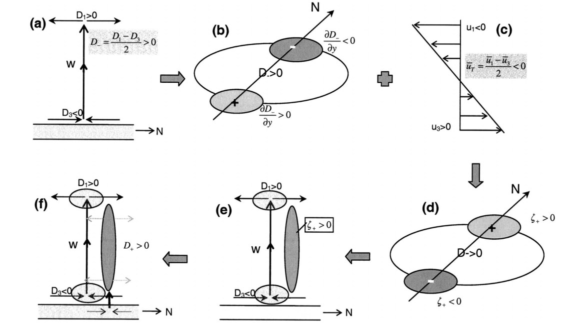
垂直切变机制示意图。
Schematic diagram for the vertical shear mechanism.
（a）起初考虑具有斜压结构的季节内振荡对流。
(a) Consider initially an ISO convection with a baroclinic structure.
（b）因此对流中心北侧 ∂D₋/∂y < 0，南侧 ∂D₋/∂y > 0。
(b) This leads ∂D₋/∂y < 0 (∂D₋/∂y > 0) north (south) of the convection center.
（c）在平均气流东风切变作用下，（d、e）对流北侧诱发正压正涡度，进而造成（f）当地的正压辐散。
(c) In the presence of the easterly shear of the mean flow, (d), (e) a positive barotropic vorticity is induced north of the convection, leading to (f) a barotropic divergence in situ.
随后产生边界层辐合，使对流加热北移。
The latter further leads to a PBL convergence and thus a northward shift of convective heating.
响应对流层中层对流加热，对流层下（上）层发生辐合（发散），对流层中层出现最大垂直运动（图 10a）。
In response to the convective heating in the middle troposphere, a convergence (divergence) occurs in the lower (upper) troposphere with maximum vertical motion appearing in the mid troposphere (Fig. 10a).
因此，斜压辐散的正极大值与对流中心重合，在其北侧 ∂D₂/∂y < 0、南侧 ∂D₂/∂y > 0（图 10b）。
Therefore, a maximum positive baroclinic divergence coincides with the convection center, and ∂D₂/∂y < 0 (∂D₂/∂y > 0) north (south) of the convection center (Fig. 10b).
考虑亚洲夏季季风区平均气流的东风切变（图 10c）。
Consider the easterly shear of the mean flow in the Asian summer monsoon region (Fig. 10c).
依照式（9），对流北侧诱发正压正涡度，南侧诱发负涡度（图 10d、e）。
According to Eq. (9), positive barotropic vorticity is induced north of the convection and negative vorticity south of it (Figs. 10d,e).
在北半球，由于 f₀ > 0，对流前方的正压正涡度可依照式（10）在当地诱发正压辐散。
The positive barotropic vorticity ahead of the convection may induce a barotropic divergence in situ in the Northern Hemisphere [f₀ > 0, according to Eq. (10)].
自由大气散度进一步导致边界层辐合以满足连续性方程（图10f）。
The free-atmosphere divergence leads further to a boundary layer convergence in order to satisfy the continuity equation (Fig. 10f).
边界层水汽辐合有利于对流加热向原对流中心以北发展，从而导致对流北移。
The boundary layer moisture convergence favors the development of convective heating to the north of the previous convection center, and as a result, the convection moves northward.
再分析结构清楚显示边界层辐合在相位上超前于对流，而大气环流模式输出中这一特征不太明显。
The phase leading of the PBL convergence to the convection is clearly seen from the structure derived from the reanalysis data, but less clearly from the AGCM output.
然而，这两个数据都清楚地显示了海平面气压和对流层低层位势高度的相位领先。
However, both data clearly show phase leading in the sea level pressure and lower-tropospheric geopotential height.
这是因为自由大气发散的后果不仅导致PBL的辐合（以部分补偿质量损失），而且导致表面压力下降。
This is because the consequence of the free-atmosphere divergence leads to not only the convergence in the PBL (to partially compensate the loss of the mass), but also the drop of the surface pressure.
正是对流前产生负位势高度，导致对流层低层辐合有北移的趋势。
It is the generation of negative geopotential height in front of the convection that gives rise to the tendency of a northward shift of the convergence in the lower troposphere.
模式低层散度收支的分析也显示这一点（图略）。
This is clearly seen from our analysis of the model low-level divergence budget (figure not shown).
综上所述，南亚季风区盛行的东风切变可能导致对流以北产生正压涡度，导致PBL水汽辐合和对流层低层负位势高度北移，从而导致对流北移。
To summarize, the prevailing easterly shear over the South Asian monsoon region may cause the generation of the barotropic vorticity to the north of a convection, leading to the northward shift of both the moisture convergence in the PBL and the negative geopotential height in the lower troposphere and thus the northward propagation of the convection.
值得注意的是，上述垂直切变机制仅在北半球赤道以外（即北纬5°以北）有效。
It is worth noting that the vertical shear mechanism mentioned above is only valid away from the equator in the Northern Hemisphere (say, north of 5°N).
这是因为在赤道地区科里奥利参数极小，科里奥利参数的负号意味着在东风切变存在的情况下向南传播。
This is because in the equatorial region the Coriolis parameter is extremely small, and the negative sign of the Coriolis parameter implies the southward propagation in the presence of the easterly shear.
然而，无论是模型还是现实，北向传播都是从南纬5°左右开始的。
However, in both model and reality, the northward propagation starts from around 5°S.
这指出，除了垂直切变之外，其他物理机制也必须有助于向北传播。
This points out that other physical mechanisms, in addition to the vertical shear, must act to contribute to the northward propagation.
下一小节因此讨论水汽—对流反馈。
This leads to our discussion in next subsection of the moisture–convection feedback.
水汽与对流反馈机制
根据 AGCM 和再分析数据分析的 BSISO 结构显示出比湿领先于对流的明显相位。
The BSISO structures analyzed from both the AGCM and reanalysis data show a clear phase leading of the specific humidity to the convection.
有人认为，这种经向不对称可能导致对流加热北移，导致对流北移。
It is argued that this meridional asymmetry may cause the northward shift of the convective heating, leading to the northward movement of the convection.
一个关键问题是什么导致了比湿的不对称分布。
A key question is what causes the asymmetric distribution of the specific humidity.
下面我们提出两种可能的机制。
In the following we propose two possible mechanisms.
平均气流的水汽平流
观测到的东印度洋扇区夏季平均气流显示 PBL 中的北向成分占主导地位（图 11）。
The observed summer mean flow over the eastern Indian Ocean sector shows a prevailing northward component in the PBL (Fig. 11).
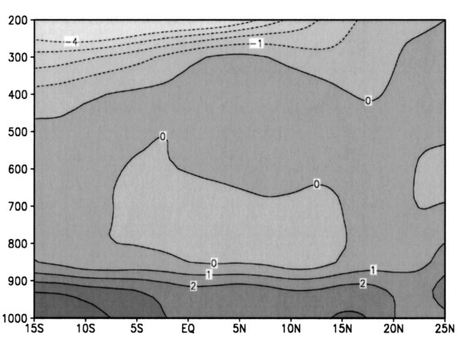
70°—95°E 平均的夏季平均气流南北分量经向—垂直剖面（m s⁻¹）。
Meridional–vertical profile of the north–south component of the summer mean flow (m s⁻¹) averaged between 70° and 95°E.
据推测，边界层中向北的夏季平均流造成的水汽平流以及 PBL 中扰动垂直运动造成的平均比湿平流可能至少部分地造成了比湿相对于对流的不对称性。
It is hypothesized that the moisture advection by this northward summer mean flow in the boundary layer together with the advection of the mean specific humidity by the perturbation vertical motion in the PBL may be, at least partially, responsible for the asymmetry of the specific humidity with respect to the convection.
在数学上，这一机制可用下方的水汽变化方程表示。
Mathematically, this mechanism may be expressed by the moisture-tendency equation shown below.
在物理上，可作如下解释（图 12）。
Physically, it can be interpreted as follows (Fig. 12).
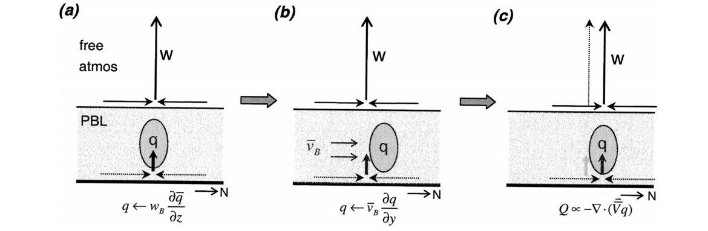
平均气流造成水汽平流的机制示意图。
Schematic diagram for the mechanism of moisture advection by mean flow.
（a）埃克曼抽吸产生的比湿扰动被（b）边界层平均北向气流平流，导致（c）相对于原对流中心，水汽辐合与对流加热向北移动。
(a) The specific humidity perturbation caused by Ekman pumping is advected (b) by the mean northward meridional wind in the PBL, (c) which leads to the northward shift of moisture convergence and thus convective heating to the convection center.
考虑强 ISO 对流，其表面汇聚，上层发散。
Consider a strong ISO convection with convergence at the surface level and divergence at the upper level.
近地面辐合会在大气边界层诱发上升运动，把地表丰富的水汽抬升到边界层中的一定高度（图 12a）。
The convergence at the surface level will induce the upward motion in the atmospheric boundary layer, which will bring the rich moisture at the surface to a certain level in the PBL (Fig. 12a).
PBL夏季平均经向风的平流效应可能使比湿中心进一步向对流以北移动（图12b）。
The advection effect by the summer mean meridional wind in the PBL may further shift the specific humidity center to the north of the convection (Fig. 12b).
由于对流加热在很大程度上取决于水汽辐合，北移的水汽中心将使对流加热北移，从而使对流倾向于向北传播（图 12c）。
As the convective heating largely depends on the moisture convergence, the shifted moisture center will lead to the northward displacement of the convective heating and thus the convection tends to move northward (Fig. 12c).
平均经向水汽梯度导致的水汽平流
导致水汽北移的另一种可能机制是在存在平均经向比湿梯度的情况下通过 ISO 风的平流效应。
Another possible mechanism that leads to the northward shift of the moisture is through the advection effect by the ISO wind in the presence of the mean meridional specific humidity gradient.
图 13 显示了印度次大陆地区夏季平均 [6 月至 8 月 (JJA)] 地表比湿的经向分布。
Figure 13 shows the meridional distribution of the summer mean [June–August (JJA)] specific humidity at the surface averaged over the Indian subcontinent sector.
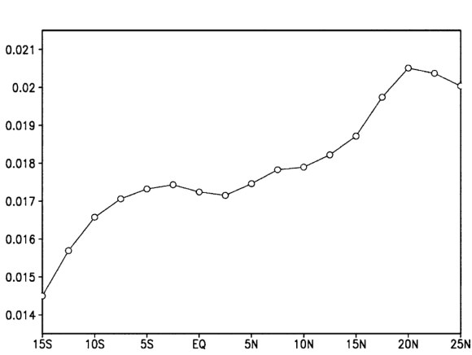
70°—95°E 平均的夏季 1000 hPa 比湿经向剖面（kg kg⁻¹）。
Meridional profile of the summer mean specific humidity (kg kg⁻¹) at 1000 mb averaged between 70° and 95°E.
在夏季季风季节，最大湿度位于北印度洋上空 20°N 左右。
During the summer monsoon season the maximum moisture is located around 20°N over the northern Indian Ocean.
20°N 以南，平均比湿经向梯度为正。
To the south of 20°N, the meridional gradient of the mean specific humidity is positive.
考虑季节内振荡风的平流作用，水汽方程可写成下方形式。
Considering advection by the ISO wind, the moisture equation may be written as shown below.
响应季节内振荡的对流加热，扰动风在对流中心北侧向南流，在南侧向北流。
In response to ISO convective heating, the perturbation wind flows southward north of the convection center and northward south of it.
因此，水汽扰动呈不对称结构：对流中心北侧为正异常中心，南侧为负异常中心（图 14）。
As a result, the moist perturbation has an asymmetric structure with a positive center appearing to the north of the convection center and a negative center to the south of the convection (Fig. 14).
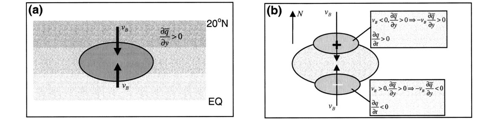
存在平均比湿梯度时，季节内振荡风造成水汽平流的机制示意图。
Schematic diagram for the mechanism of moisture advection by the ISO wind in the presence of the mean specific humidity gradient.
对流诱发的扰动风对经向不对称的平均比湿场进行平流：（a）在对流中心北侧向南，南侧向北。
The meridional asymmetric mean specific humidity field is advected by convection-induced perturbation wind, (a) southward to the north of a convection center and northward to the south, which leads to a (b) positive moisture perturbation to the north and negative to the south of the convection center.
由此产生（b）北侧正、南侧负的水汽扰动，使对流倾向于北移。
As a result, the convection tends to move northward.
事实上，第二种水汽平流机制已经纳入 Li 和 Wang（1994）的模拟结果中。
This second moisture advection mechanism has, in fact, already incorporated in Li and Wang’s (1994) modeling results.
在这项研究中，Li 和 Wang 使用了没有夏季平均气流影响的中间大气模型。
In that study Li and Wang used an intermediate atmospheric model without the effect of the summer mean flow.
指定了 7 月气候平均海表温度场，其最大海表温度位于印度洋北部 20°N。
A climatological July mean SST field is specified that has a maximum SST at 20°N over the northern Indian Ocean.
模型中的地表湿度完全由基于经验关系的平均海温控制。
The surface moisture in the model is completely controlled by the mean SST based on an empirical relationship.
模型模拟表明，相对于赤道的不对称平均热力条件导致印度洋和西太平洋区域向北传播。
The model simulations indicate that the asymmetric mean thermal condition with respect to the equator leads to a northward propagation over the Indian and western Pacific Ocean sectors.
这种水汽对流反馈机制适用于从 10°S 到 20°N 的所有纬度（包括赤道地区），为垂直切变机制提供了有价值的补充，用于解释观测到的向北传播特征。
This moisture–convection feedback mechanism works for all latitudes from 10°S to 20°N (including the equatorial region), providing a valuable addition to the vertical shear mechanism for explaining the observed northward propagation feature.
特征值分析
为什么季风区北半球夏季北传播明显？
Why is the northward propagation pronounced during the boreal summer in the monsoon region?
向北传播的BSISO是否是夏季平均气流的不稳定模态？
Is the northward propagating BSISO an unstable mode of the summer mean flow?
垂直切变与湿气对流反馈以及内部动力与海气相互作用在导致向北传播方面的相对作用是什么？
What is the relative role of the vertical shear versus moisture–convection feedback and internal dynamics versus air–sea interaction in causing the northward propagation?
在本节中，我们打算使用统一的理论框架来回答这些问题。
In this section we intend to answer these questions using a unified theoretical framework.
特征值分析的动力框架将 Wang 和 Li（1993）的 2½ 层大气模式［见式（1）—（8）］与一个简单的恒定混合层海洋模式耦合。
The dynamic framework used for an eigenvalue analysis is based on Wang and Li’s (1993) 2½-layer atmospheric model [see Eqs. (1)–(8)] coupled to a simple constant mixed-layer ocean model.
对热力学方程进行了修改，包括与 SST 效应相关的对流加热和 PBL 中的扰动水汽辐合。
A modification has been made in the thermodynamics equation to include the convective heating associated with the SST effect and the perturbation moisture convergence in the PBL.
因此，热力学方程可改写为式（11）。
Thus, the thermodynamic equation can be rewritten as Eq. (11).
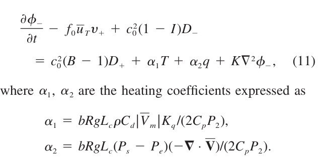
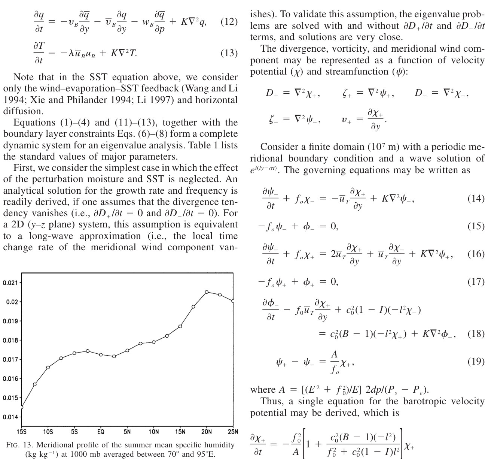
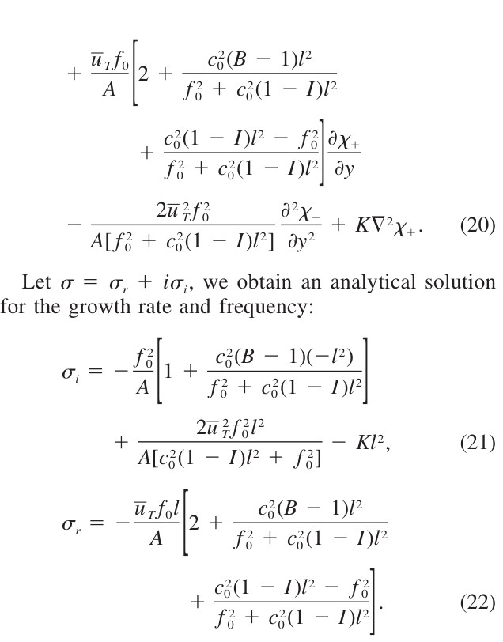
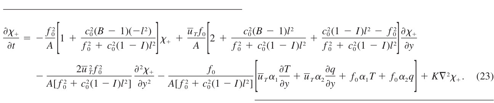
其中 α₁ 和 α₂ 是式（11）下方定义的加热系数。
Here α₁ and α₂ are the heating coefficients defined below Eq. (11).
引入扰动水汽方程和海温方程［式（12）和式（13）］后，特征值系统得以闭合。
The eigenvalue system is closed by introducing the perturbation moisture and SST equations, Eqs. (12) and (13).
海温方程只考虑风—蒸发—海温反馈（Wang and Li 1994；Xie and Philander 1994；Li 1997）以及水平扩散。
In the SST equation, only wind–evaporation–SST feedback (Wang and Li 1994; Xie and Philander 1994; Li 1997) and horizontal diffusion are considered.
式（1）—（4）与式（11）—（13），加上边界层约束式（6）—（8），构成用于特征值分析的完整动力系统。
Equations (1)–(4) and (11)–(13), together with boundary-layer constraints (6)–(8), form a complete dynamic system for eigenvalue analysis.
表1列出了主要参数的标准值。
Table 1 lists the standard values of major parameters.
首先，我们考虑最简单的情况，忽略扰动湿度和海温的影响。
First, we consider the simplest case in which the effect of the perturbation moisture and SST is neglected.
若假定辐散的局地变化率为零，即 ∂D₁/∂t = 0、∂D₂/∂t = 0，就容易得到增长率和频率的解析解。
An analytical solution for the growth rate and frequency is readily derived if one assumes that the divergence tendencies vanish (i.e., ∂D₁/∂t = 0 and ∂D₂/∂t = 0).
对于二维（y-z 平面）系统，该假设相当于长波近似（即经向风分量的局时变化率消失）。
For a 2D (y–z plane) system, this assumption is equivalent to a long-wave approximation (i.e., the local time change rate of the meridional wind component vanishes).
为检验这一假设，分别保留和去掉 ∂D₁/∂t、∂D₂/∂t 求解特征值问题，所得解非常接近。
To validate this assumption, the eigenvalue problems are solved both with and without ∂D₁/∂t and ∂D₂/∂t, and the solutions are very close.
辐散、涡度和经向风可用速度势 χ 和流函数 ψ 表示。
Divergence, vorticity, and meridional wind may be expressed in terms of velocity potential χ and streamfunction ψ.
考虑长度为 10⁷ m 的有限区域、周期性经向边界条件以及形如 exp[i(ly − σt)] 的波动解。
Consider a finite domain of 10⁷ m with periodic meridional boundary conditions and a wave solution proportional to exp[i(ly − σt)].
控制方程可写为式（14）—（19）。
The governing equations may be written as Eqs. (14)–(19).
由此可导出正压速度势的单一方程［式（20）］。
A single equation for the barotropic velocity potential can then be derived [Eq. (20)].
令 σ = σr + iσi，即可得到增长率和频率的解析表达式［式（21）和式（22）］。
Let σ = σr + iσi; analytical expressions for the growth rate and frequency follow as Eqs. (21) and (22).
这些解表明，增长率与垂直切变的平方成正比，而频率与垂直切变的一次方成正比。
These solutions show that growth rate is proportional to the square of vertical shear, while frequency is proportional to vertical shear itself.
因此，经向相速取决于垂直切变。
Thus the meridional phase speed depends on the vertical shear.
在东风切变情形（ūT < 0）下，BSISO 模态在北半球始终向北传播。
For the easterly-shear case (ūT < 0), the BSISO mode always propagates northward in the Northern Hemisphere.
增长率和频率对经向波数的依赖性如图 15 所示。
The dependence of the growth rate and frequency on meridional wavenumber is illustrated in Fig. 15.
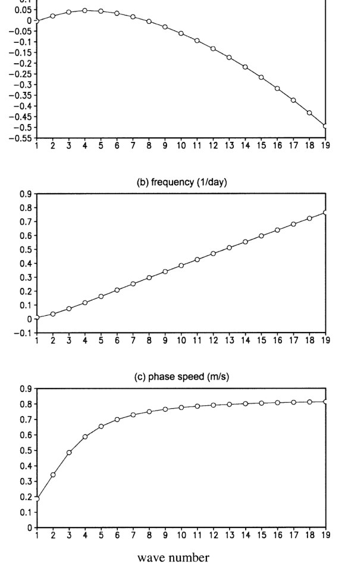
特征值解随波数的变化：（a）增长率（day⁻¹）；（b）频率（day⁻¹）和相速（m s⁻¹）。
Eigenvalue solutions for (a) growth rate (day⁻¹) and (b) frequency (day⁻¹) and phase speed (m s⁻¹) as a function of wavenumber.
BSISO 模式在波数 4 处最不稳定，对应于 2500 km 的波长。
The BSISO mode is most unstable at wavenumber 4, which corresponds to a wavelength of 2500 km.
最不稳定模态的增长率所对应的 e 折叠时间尺度处于季节内范围。
The growth rate for this most unstable mode is in the intraseasonal range (with regard to its e-folding time scale).
东风切变为 −12 m s⁻¹ 时，相应的经向相速约为 0.6 m s⁻¹。
For an easterly shear of −12 m s⁻¹, the corresponding meridional phase speed is about 0.6 m s⁻¹.
所有这些值都在观测值的合理范围内。
All these values are within a reasonable range of the observed values.
图16显示了最不稳定模态的相速和生长速率与垂直切变强度之间的关系。
Figure 16 shows the relationship between the phase speed and growth rate of the most unstable mode and the vertical shear intensity.
相速与垂直切变强度呈线性关系。
The phase speed is linearly proportional to the vertical shear.
垂直切变为零时，不会有向北的传播。
With a zero vertical shear, there would be no northward propagation.
随着东风切变强度的增加，例如从-12 m s⁻¹ 增加到-24 m s⁻¹，北向相位速度从0.6 增加到1.2 m s⁻¹。
With the increase of the easterly shear intensity, say, from −12 to −24 m s⁻¹, the northward phase speed increases from 0.6 to 1.2 m s⁻¹.
增长率随垂直切变强度的平方增加。
The growth rate increases parabolically with the square of the vertical shear intensity.
接下来，我们研究海气相互作用和水汽-对流反馈的影响。
Next, we examine the effect of the air–sea interaction and the moisture–convection feedback.
正压速度势方程可写为式（23）。
The barotropic velocity-potential equation can be written as Eq. (23).
这一简单动力框架作了多项假设，例如忽略海洋混合对海温的影响，以及在边界层动量方程中忽略平均气流平流。因此，各过程贡献的比较是定性的，而非定量的。
Equation (23), together with Eqs. (12) and (13), forms a closed eigenvalue system.
只需关闭一些模型参数即可揭示单个过程对北向传播的影响。
The effect of individual processes on the northward propagation may be revealed by simply switching off some model parameters.
例如，分别令 ūT、α₁ 或 α₂ 为零，就可依次排除垂直切变、海温反馈或水汽反馈的作用。
For instance, setting ūT, α₁, or α₂ to zero excludes the effects of vertical shear, SST feedback, or moisture feedback, respectively.
表2显示了上述各过程存在下的结果。
Table 2 shows the results in the presence of each of the aforementioned processes.
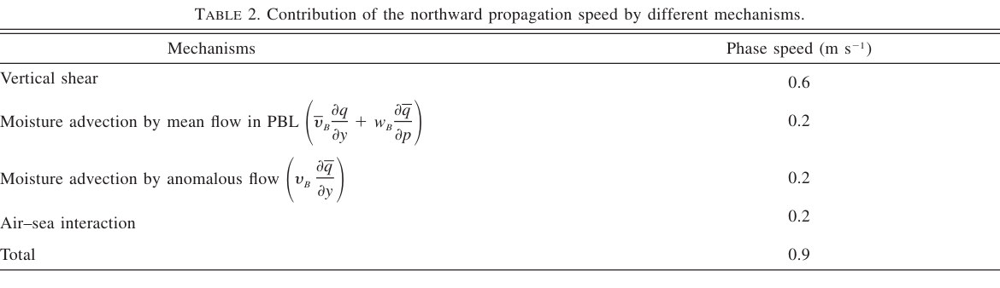
不同机制对北传相速的贡献（m s⁻¹）。
Contribution to northward phase speed by different mechanisms (m s⁻¹).
垂直切变 — 0.6
Vertical shear — 0.6
边界层平均气流造成的水汽平流 — 0.2
Moisture advection by mean flow in the PBL — 0.2
异常气流造成的水汽平流 — 0.2
Moisture advection by anomalous flow — 0.2
海气相互作用 — 0.2
Air–sea interaction — 0.2
总计 — 0.9
Total — 0.9
单独的垂直切变贡献约 0.6 m s⁻¹ 的北传相速；平均气流造成的水汽平流、平均经向水汽梯度造成的水汽平流以及海气相互作用各贡献约 0.2 m s⁻¹。
While the sole effect of the vertical shear contributes to a northward phase speed of about 0.6 m s⁻¹, the effects of moisture advection by the mean flow or by the mean meridional moisture gradient and the air–sea interaction contribute approximately equally to a northward phase speed of 0.2 m s⁻¹.
由于各情形最不稳定波长不同，总北传相速与各单项相速之和略有差异；两者都在实际可观测的范围内。
Due to a difference in the most unstable wavelength, the total northward phase speed is slightly different from the sum of individual speeds, both of which are in a realistic range.
由于简单动力框架包含各种假设，例如PBL动量方程中忽略了海洋混合对海温和平均流平流的影响，因此不同过程的贡献之间的比较是定性的而不是定量的。
Since the simple dynamic framework contains various assumptions such as the omission of ocean mixing effects on SST and mean flow advection in the PBL momentum equations, the comparison between the contributions of different processes is qualitative rather than quantitative.
总结与讨论
本研究基于ECHAM模拟和NCEP-NCAR再分析，揭示了向北传播的BSISO模式的时空结构。
In this study, the spatial and temporal structure of the northward propagating BSISO mode is revealed based on the analysis from the ECHAM simulation and the NCEP–NCAR reanalysis.
AGCM 输出与 NCEP-NCAR 再分析的比较表明，ECHAM AGCM 模拟的 BSISO 演化特征与再分析数据得出的演化特征非常相似。
The comparison of the AGCM output with the NCEP–NCAR reanalysis shows that the evolution features of the BSISO simulated by the ECHAM AGCM bears close similarities with those derived from the reanalysis data.
我们的综合分析表明，与BSISO模式相关的对流在西赤道印度洋发起后，沿着赤道向东传播。
Our composite analysis reveals that after being initiated in the western equatorial Indian Ocean, the convection associated with the BSISO mode propagates eastward along the equator.
赤道东印度洋上空90°E左右，对流开始北移至北印度洋。
Over the eastern equatorial Indian Ocean around 90°E, the convection begins to move northward to the northern Indian Ocean.
大气环流模式模拟和 NCEP–NCAR 再分析都显示，5°N 至 20°N 的北传相速约为 1 m s⁻¹，而赤道附近及其以南较慢。
Both the AGCM simulation and the NCEP–NCAR reanalysis show a northward phase speed of about 1 m s⁻¹ between 5°N and 20°N and a slower phase speed near and south of the equator.
合成分析主要捕捉独立的向北传播事件，印度洋向北传播与赤道西太平洋向东传播之间没有明显的联系。
The composite analysis mainly captures the independent northward propagation events, as there is no obvious connection between the northward propagation in the Indian Ocean and the eastward propagation in the equatorial western Pacific.
对向北传播的BSISO模态结构的诊断表明，涡度场和水汽场相对于对流中心存在显著的经向不对称性。
The diagnosis of the northward propagating BSISO mode structure unveils that there are significant meridional asymmetries, with respect to the convection center, in the vorticity and moisture fields.
具有等效正压结构的正涡度中心位于对流中心以北几度处。
A positive vorticity center with an equivalent barotropic structure is located a few degrees north of the convection center.
扰动比湿的极大值位于对流层低层，其相位也倾向于在对流以北约几个纬度。
The perturbation specific humidity, which has a maximum center in the lower troposphere, also tends to lead the convection by a couple of degrees.
提出了一个简单的理论模型来理解向北传播的起源。
A simple theoretical model is advanced to understand the origin of the northward propagation.
基于BSISO结构，我们提出了两种内部大气动力学机制：
Based on the BSISO structure, we propose two internal atmospheric dynamics mechanisms:
1）垂直切变机制。
1) The vertical shear mechanism.
季风区夏季平均气流具有较强的东风切变特征。
The summer mean flow in the monsoon region is characterized by a strong easterly shear.
这种垂直切变将自由大气中的斜压模式和正压模式耦合在一起，导致对流北部产生正压涡度和发散。
This vertical shear couples the baroclinic and barotropic modes in the free atmosphere and leads to the generation of barotropic vorticity and divergence to the north of the convection.
后者进一步使边界层水汽辐合北移，进而使季节内振荡对流北移。
The latter further leads to the northward shift of the moisture convergence in the PBL and thus the ISO convection.
不过，这种机制仅在北半球远离赤道的地方有效。
However, this mechanism is effective only away from the equator in the Northern Hemisphere.
2) 水汽-对流反馈机制。
2) The moisture–convection feedback mechanism.
有两个过程导致对流层低层比湿北移。
Two processes contribute to the northward shift of the specific humidity in the lower troposphere.
它们是：
They are
1) PBL 中平均偏南风的水汽平流和
1) the moisture advection by the mean southerly in the PBL and
2）扰动风对平均比湿梯度的平流。
2) the advection of the mean specific humidity gradient by the perturbation wind.
水汽分布不对称进一步导致对流加热北移，导致BSISO模态北移。
The asymmetric moisture distribution further leads to the northward shift of the convective heating and as a result the BSISO mode moves northward.
特征值分析表明，向北传播的BSISO模态是季风区夏季平均气流的不稳定模态。
Our eigenvalue analysis indicates that the northward propagating BSISO mode is an unstable mode of the summer mean flow in the monsoon region.
这解释了该地区频繁出现BSISO对流向北传播的情况。
This explains the frequent appearance of the northward propagation of the BSISO convection in the region.
分析结果还指出了各个过程对于北传贡献的相对重要性。
The analysis result also points out the relative importance of various processes in contributing to the northward propagation.
虽然垂直切变在北半球远离赤道的地区发挥着重要作用，但水汽-对流反馈和海气相互作用也发挥着重要作用，特别是在赤道附近和以南地区。
While the vertical shear plays an important role away from the equator in the Northern Hemisphere, the moisture–convection feedback and air–sea interaction also contribute significantly, particularly in the region near and south of the equator.
总体而言，鉴于模型和观测中BSISO的相似结构和传播特征，我们得出结论，内部大气动力学对于热带印度洋上空向北传播至关重要。
Overall, given the similar structure and propagation characteristics of the BSISO in the model and the observation, we conclude that it is the internal atmospheric dynamics that are essential to give rise to the northward propagation over the tropical Indian Ocean.
与观测中的 BSISO 结构相比，模式的一个差别在于低层辐合的相位。
A discrepancy of the model compared to the observed BSISO structure is the phase of the low-level convergence.
根据NCEP-NCAR再分析数据，低层辐合似乎领先对流2-3°，低层垂直运动轴向北倾斜。
With the NCEP–NCAR reanalysis data, the low-level convergence appears to lead the convection by 2–3° with the vertical motion axis tilting to the north at the lower level.
这种向北的移动很可能是由于 PBL 顶部的正涡度强迫导致的埃克曼抽吸引起的。
It is likely that this northward shift is caused by the Ekman pumping due to the positive vorticity forcing at top of the PBL.
但模式中没有这一北移，说明 ECHAM 的边界层动力过程仍需改进。
However, this shift does not appear in the model, pointing out the need for improvement of the PBL dynamics in the ECHAM.
我们的观测和AGCM分析表明，强烈的向北传播的BSISO并不依赖于赤道东移分量。
Our observational and AGCM analyses indicate that strong northward propagating BSISOs do not depend on the equatorial eastward moving component.
因此，这里提出的机制与 Wang 和 Xie（1997）以及 Lawrence 和 Webster（2002）提出的 Rossby 波发射机制有根本的不同。
Thus, the mechanisms proposed here are fundamentally different from the Rossby wave emanation mechanism proposed by Wang and Xie (1997) and Lawrence and Webster (2002).
两者都可能反映了真实现象的两个极端。
Both may reflect two extremes of the real phenomenon.
当前研究发现的强向北传播情况可能主要反映了独立向北传播情景，而较弱向北传播情况则与赤道东移ISO相关的罗斯贝波发射情景有关。
It is likely that the strong northward propagation cases picked up by the current study primarily reflect the independent northward propagation scenario, while the weaker northward propagation cases are linked to the Rossby wave emanation scenario in association with equatorial eastward moving ISOs.
所提出的机制可能也与北半球冬季南半球的向南传播有关（见图2）。
The proposed mechanisms might be also relevant to the southward propagation in the Southern Hemisphere in boreal winter (see Fig. 2).
我们将在未来的工作中进一步研究这些场景。
We will further examine these scenarios in future work.
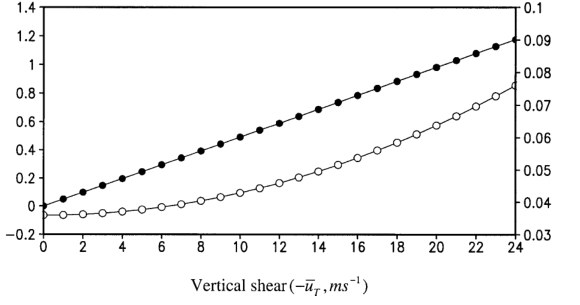
最不稳定模态的相速（实心圆，m s⁻¹）和增长率（空心圆，day⁻¹）随垂直切变强度的变化。
Phase speed (closed circles; m s⁻¹) and growth rate (open circles; day⁻¹) of the most unstable modes as a function of vertical shear intensity.
横轴为东风切变强度（−ūT，m s⁻¹）。
The horizontal axis represents the intensity of the easterly shear (i.e., negative ūT; m s⁻¹).
致谢
作者衷心感谢 E. Roeckner 博士和 Xiouhua Fu 博士在建立 ECHAM AGCM 过程中的讨论和帮助。
The authors would like to thank Dr. E. Roeckner and Dr. Xiouhua Fu for discussions and help in setting up the ECHAM AGCM.
NCEP-NCAR 再分析数据由 NOAA-CIRES 气候诊断中心通过网站 (http://www.cdc.noaa.gov) 提供。
The NCEP– NCAR reanalysis data were provided by the NOAA– CIRES Climate Diagnostics Center from the Web site (http://www.cdc.noaa.gov).
本研究是 XJ 获 IPRC 支持的博士学位论文的一部分。
This work is a part of XJ’s Ph.D. dissertation supported by IPRC.
TL 和 BW 感谢 NSF 气候动力学计划（ATM-0073023 和 ATM-0329531）的支持。
TL and BW acknowledge the support of the NSF climate dynamics program (ATM-0073023 and ATM-0329531).
IPRC 部分由全球变化前沿研究系统赞助。
The IPRC is sponsored in part by the Frontier Research System for Global Change.
附录：线性控制方程的推导
考虑 f 平面上的二维线性运动，即所有变量均无纬向变化。
Consider a linear motion in a 2D case (i.e., zonal variation vanishes for all variables) on an f plane.
在垂直切变恒定时，气压坐标下的控制方程可写为式（A1）—（A4）。
Under a constant vertical shear, the governing equations in pressure coordinates can be written as Eqs. (A1)–(A4).
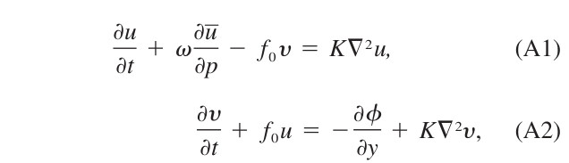
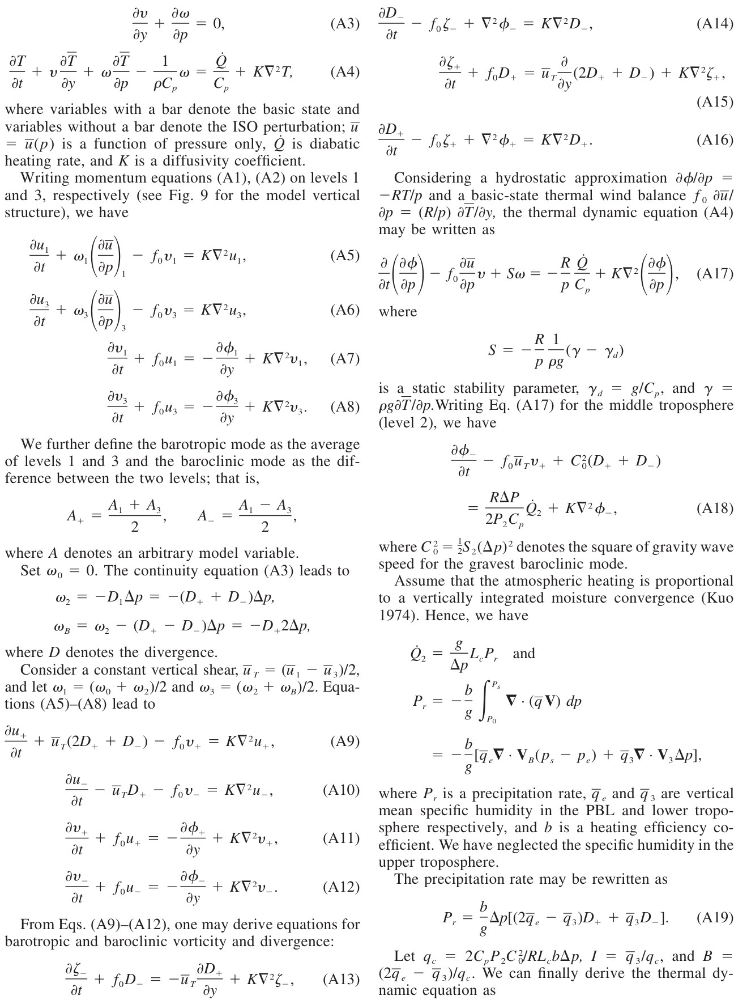
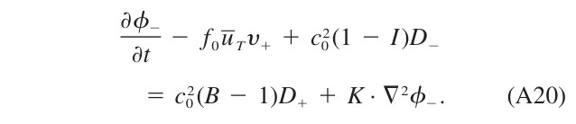
上划线表示基态，无上划线的变量表示季节内振荡扰动；平均纬向风仅是气压的函数，Q̇ 是非绝热加热率，K 是扩散系数。
Overbars denote the basic state and unbarred variables denote ISO perturbations; mean zonal wind is a function of pressure only, Q̇ is the diabatic heating rate, and K is a diffusion coefficient.
将动量方程（A1）和（A2）分别写在第 1 层和第 3 层（模式垂直结构见图 9），得到式（A5）—（A8）。
Writing the momentum equations (A1) and (A2) at levels 1 and 3, respectively (see Fig. 9 for the model vertical structure), gives Eqs. (A5)–(A8).
正压模态定义为第 1 层和第 3 层的平均，斜压模态定义为两层之差的一半，如下式所示。
The barotropic mode is defined as the mean of levels 1 and 3, and the baroclinic mode as half their difference, as shown below.
其中 A 表示任意模式变量。
Here A denotes any model variable.
令 ω₀ = 0。
Set ω₀ = 0.
于是连续方程（A3）给出下方的垂直速度关系。
The continuity equation (A3) then gives the vertical velocities shown below.
其中 D 表示辐散。
Here D denotes divergence.
考虑恒定的垂直切变，T = (ū₁ − ū₃)/2，并令 ω₁ = (ω₀ + ω2)/2 且 ω₃ = (ω2 + ωB)/2。
Consider a constant vertical shear, T = (ū₁ − ū₃)/2, and let ω₁ = (ω₀ + ω₂)/2 and ω₃ = (ω₂ + ωB)/2.
式（A5）—（A8）导出式（A9）—（A12）。
Equations (A5)–(A8) lead to Eqs. (A9)–(A12).
由式（A9）—（A12）可导出正压和斜压涡度及辐散方程［式（A13）—（A16）］。
From Eqs. (A9)–(A12), one can derive barotropic and baroclinic vorticity and divergence equations, Eqs. (A13)–(A16).
利用静力平衡和基态热成风平衡，热力学方程（A4）可写为式（A17）。
Using hydrostatic balance and basic-state thermal-wind balance, the thermodynamic equation (A4) can be written as Eq. (A17).
其中 S 是上方给出的静力稳定度参数，γd = g/Cp，γ = ρg∂T̄/∂p。
Here S is the static-stability parameter shown above, γd = g/Cp, and γ = ρg∂T̄/∂p.
将式（A17）用于对流层中层（第 2 层），得到式（A18）。
Applying Eq. (A17) to the middle troposphere (level 2) gives Eq. (A18).
其中 C₀² = ½S₂(Δp)² 表示最低阶斜压模态重力波波速的平方。
Here C₀² = ½S₂(Δp)² denotes the square of gravity-wave speed for the gravest baroclinic mode.
假设大气加热与垂直积分水汽辐合成正比（Kuo 1974）。
Assume that the atmospheric heating is proportional to a vertically integrated moisture convergence (Kuo 1974).
由此可得下方的方程。
This gives the equations shown below.
其中 Pr 为降水率；q̄e 与 q̄₃ 分别为边界层和对流层低层的垂直平均比湿；b 为加热效率系数。
Here Pr is precipitation rate; q̄e and q̄₃ are the vertically averaged specific humidities in the boundary layer and lower troposphere, respectively; and b is a heating-efficiency coefficient.
我们忽略了对流层上层的比湿。
We have neglected the specific humidity in the upper troposphere.
降水率可改写为式（A19）。
The precipitation rate may be rewritten as Eq. (A19).
令 qc、I 和 B 按式（A20）前所示定义。
Let qc, I, and B be defined as shown immediately before Eq. (A20).
最终可得到热力学方程［式（A20）］。
The thermodynamic equation can finally be derived as Eq. (A20).
在式（A20）中，I 和 B 分别是与对流层低层和边界层比湿成正比的加热系数。
In Eq. (A20), I and B are heating coefficients proportional to specific humidity in the lower troposphere and boundary layer, respectively.
C₀²(1 − I)D₋ 与 C₀²(B − 1)D₊ 分别表示自由大气水汽辐合和边界层摩擦水汽辐合引起的对流加热。
The terms C₀²(1 − I)D₋ and C₀²(B − 1)D₊ represent convective heating due to free-atmospheric moisture convergence and boundary-layer frictional moisture convergence, respectively.
方程 (A13)-(A16) 和 (A20) 构成了第 4 节中机制讨论的简单动态框架。
Equations (A13)–(A16) and (A20) form a simple dynamic framework for mechanism discussions in section 4.
原文脚注
夏威夷大学马诺阿分校海洋与地球科学技术学院气象学系，美国夏威夷檀香山。
Department of Meteorology, School of Ocean and Earth Science and Technology, University of Hawaii at Manoa, Honolulu, Hawaii.
稿件于 2003 年 5 月 8 日收到，最终稿于 2003 年 9 月 12 日收到。
Manuscript received 8 May 2003, in final form 12 September 2003.
* 海洋与地球科学技术学院出版物号6742和国际太平洋研究中心出版物号242。
* School of Ocean and Earth Science and Technology Publication Number 6742 and International Pacific Research Center Publication Number 242.
1 目前所属单位：夏威夷大学马诺阿分校气象学系和国际太平洋研究中心，夏威夷檀香山。
1 Current affiliation: Department of Meteorology, and International Pacific Research Center, University of Hawaii at Manoa, Honolulu, Hawaii.
通讯作者地址：Dr. Tim Li, Dept. of Meteorology, SOEST, University of Hawaii at Manoa, 2525 Correa Road, POST 409B, Honolulu, HI 96822。
Corresponding author address: Dr. Tim Li, Dept. of Meteorology, SOEST, University of Hawaii at Manoa, 2525 Correa Road, POST 409B, Honolulu, HI 96822.
电子邮件：timli@hawaii.edu
E-mail: timli@hawaii.edu
译名对照
| 英文 | 中文 |
|---|---|
| boreal summer intraseasonal oscillation (BSISO) | 北半球夏季季节内振荡 |
| intraseasonal oscillation (ISO) | 季节内振荡 |
| northward propagation | 北传 |
| barotropic mode / vorticity | 正压模态／正压涡度 |
| baroclinic mode / divergence | 斜压模态／斜压辐散 |
| vertical shear | 垂直切变 |
| moisture–convection feedback | 水汽—对流反馈 |
| specific humidity | 比湿 |
| planetary boundary layer (PBL) | 行星边界层 |
| Ekman pumping | 埃克曼抽吸 |
| Rossby wave emanation | 罗斯贝波辐射 |
| phase speed | 相速 |